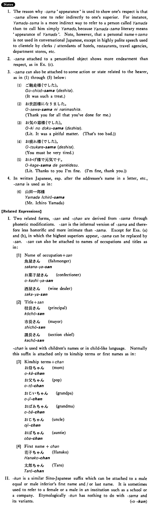

様・さま (B. 384)
- (a).
- 王様の耳は驢馬の耳だ。
- The King's ears are donkey ears.
- (b).
- 神様を信じますか。
- Do you believe in God?
- (c).
- 花子ちゃん、今夜はお月様もお星様も奇麗ねえ。
- Hanako, aren't the moon and the stars beautiful tonight!
- (d).
- お母様、どこにいらっしゃるの？
- Mother, where are you going?
- (e).
- お客様が見えたよ。
- Our guests have come.
